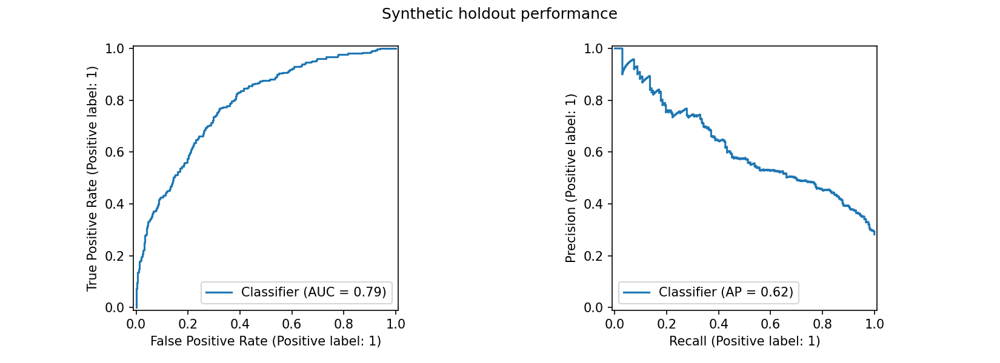

Risk distribution
Current cohortLow ≤30% · Medium ≤60% · High >60%. Contact eligibility uses a separate validation-selected cutoff.
CUSTOMER INTELLIGENCE
Turn customer risk into a focused outreach plan.
Loading customer model…
Low ≤30% · Medium ≤60% · High >60%. Contact eligibility uses a separate validation-selected cutoff.
Ranks eligible customers by predicted risk. No outreach is sent.
| Customer | Contract | Churn probability | Risk | Suggested action |
|---|
Use the sample schema to score up to 20,000 customers. CSV processing stays in your browser.
Download sample CSVUp to 10 MB. Unique customer IDs and valid numeric and category fields are required.
3,300 training customers, 1,100 validation customers and 1,100 holdout customers. Logistic Regression was selected by validation average precision.

Synthetic holdout. Precision 57.6%, recall 49.0%, contact rate 24.0%. A 20% validation contact policy does not guarantee the same future volume.
Global permutation importance: drop in validation average precision. These associations are not causal effects.
This system defines cancellation in the next 30 days, validates historical records, derives usage change and trains a model without future outcome leakage. A separate current cohort receives scores and rule-based action suggestions.
Generate synthetic data. Clean duplicates. Validate fields. Engineer usage change.
Split chronologically. Fit on training only. Select on validation. Test once.
Score current customers. Apply contact cutoff. Limit the queue to capacity.
The browser uses the fitted Python model’s exact coefficients, imputation values, scaling and categories. Python remains the training and monitoring environment. Predictions are checked against Python on 1,103 records, including missing-value and zero-usage cases.
Billing failures suggest billing assistance; three or more support tickets suggest resolving support issues; a usage decline over 25% suggests onboarding. Otherwise, review customer needs. These rules are not individual model explanations or evidence that an offer will work.
Use a randomized intervention/control experiment with mature 30-day outcomes. Compare retention lift, outreach cost, margin and complaints. Never label predicted risk or revenue exposure as revenue saved.
python -m pip install -r requirements.txt python -m streamlit run app.py
See the PDF for Windows and VS Code instructions, SQL queries, Power BI measures, monitoring, resume bullets and interview explanations.